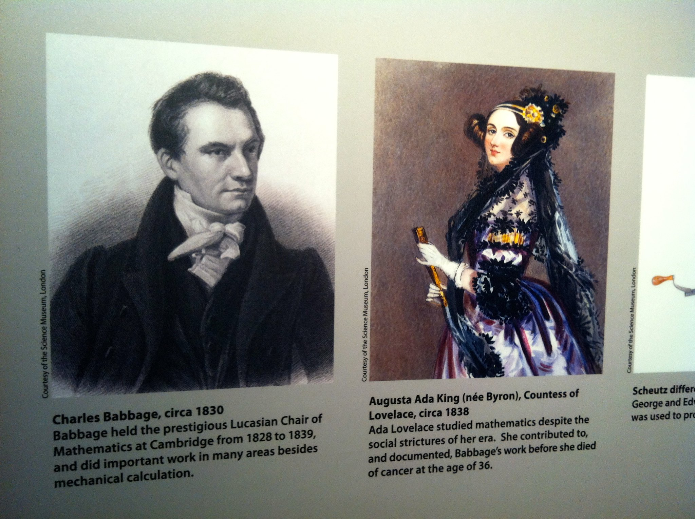

Image Attributions
Ada Lovelace: https://commons.wikimedia.org/wiki/File:Ada_Lovelace_portrait.jpg
Ada Lovelace: https://en.wikipedia.org/wiki/Ada_Lovelace#/media/File:Ada_Lovelace.jpg
Ada Lovelace and Charles Babbage: https://www.flickr.com/photos/stephenyeargin/7466501542
Charles Babbage: https://en.wikipedia.org/wiki/File:Portrait_of_Charles_Babbage_(4672397).jpg